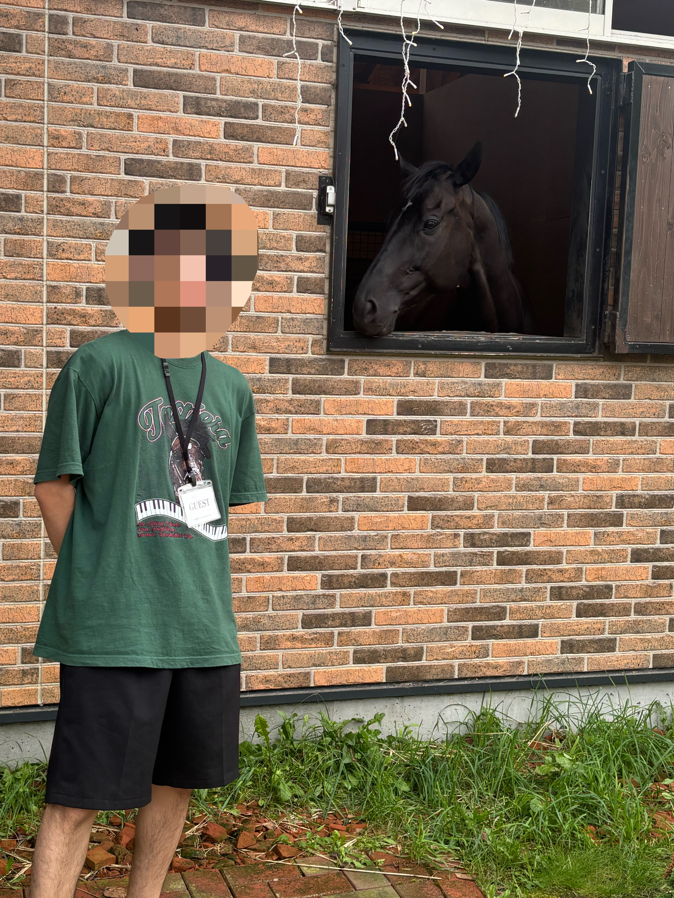

🏇 当たらなくてもよかっぺよ！
茨城県民が作ったAI予想サイト
🎯 厳選レース 的中率
21%
💰 厳選レース 回収率
44%
※集計期間: 11/7~11/15
💡 使い方ガイド:
左上の「☰ メニュー」ボタンを開き、日付 ＞ 競馬場 ＞ レース番号 の順にクリックしてください。
全頭のAI予測スコアと、期待値の高い厳選レース（🔥 勝負）の買い目を確認できます。
障害レースは対象外なのでごじゃっぺです。
※外れてもしゃあんめよ
左上の「☰ メニュー」ボタンを開き、日付 ＞ 競馬場 ＞ レース番号 の順にクリックしてください。
全頭のAI予測スコアと、期待値の高い厳選レース（🔥 勝負）の買い目を確認できます。
障害レースは対象外なのでごじゃっぺです。
※外れてもしゃあんめよ

開発者からのコメント
「いやどうも！私が丹精込めて作ったAIです。LightGBMと血統データを掛け合わせ、毎週末のレースを一生懸命予想しています。当たっても外れても、よかっぺよ！」
📚 開発者のAI参考書籍（スポンサーリンク）
 | 価格:2090円 |
 | プロ馬券師たちから学ぶ賢い券種選び 買い方のコツを掴めば回収率は大きく上がる！ [ 競馬王編集部 ] 価格:2035円 |
11月21日(土) 福島 1R ｜ ダート1700m
| 順位 | 馬名 | AIスコア |
|---|---|---|
| 1位 | ピュアティアラ | 0.396 |
| 2位 | フィールザウィル | 0.369 |
| 3位 | ニーナラルゴ | 0.322 |
| 4位 | シャプシュ | 0.215 |
| 5位 | ヌーベルフィズ | 0.203 |
| 6位 | ウメヒナタ | 0.198 |
| 7位 | セイウンラミエル | 0.182 |
| 8位 | ガザニア | 0.181 |
| 9位 | マルジョレーヌ | 0.170 |
| 10位 | ネージュドレーヴ | 0.160 |
| 11位 | ウスズミザクラ | 0.147 |
| 12位 | シュトラールモルン | 0.141 |
| 13位 | ゴッドブルーローズ | 0.131 |
| 14位 | アルフェラッツ | 0.118 |
| 15位 | ゴクラクチョウカ | 0.068 |
11月21日(土) 福島 2R ｜ ダート1150m
| 順位 | 馬名 | AIスコア |
|---|---|---|
| 1位 | ステラノヴァ | 0.325 |
| 2位 | ロンバスブレス | 0.319 |
| 3位 | コウソクルリアン | 0.277 |
| 4位 | ワイドデコラシオン | 0.271 |
| 5位 | スイーヴル | 0.245 |
| 6位 | キャンドルマス | 0.220 |
| 7位 | シスター | 0.217 |
| 8位 | ミスチヴマリアンヌ | 0.199 |
| 9位 | ヨドノティアラ | 0.160 |
| 10位 | クラインシュミット | 0.154 |
| 11位 | ミヤラティーニ | 0.130 |
| 12位 | イサチルシーキング | 0.118 |
| 13位 | エフエイト | 0.107 |
| 14位 | スペルビア | 0.103 |
| 15位 | シャインミラカナ | 0.091 |
| 16位 | ヴェネチアンキング | 0.064 |
11月21日(土) 福島 3R ｜ ダート1700m
🔥 勝負レース
| 順位 | 馬名 | AIスコア |
|---|---|---|
| 1位 | ランフェザー | 0.481 |
| 2位 | スクリプトール | 0.329 |
| 3位 | プリマアルバ | 0.221 |
| 4位 | コルキス | 0.215 |
| 5位 | ボンジュールパリ | 0.206 |
| 6位 | エコロガルディア | 0.189 |
| 7位 | エスアンヴィユ | 0.172 |
| 8位 | テンソンコウリン | 0.171 |
| 9位 | カリスマン | 0.166 |
| 10位 | マックスプロックス | 0.161 |
| 11位 | ラヴァレード | 0.160 |
| 12位 | マイバーゲン | 0.157 |
| 13位 | レガシーマインド | 0.148 |
| 14位 | タクミオジュウ | 0.133 |
| 15位 | グリームウッド | 0.090 |
🎫 推奨買い目: ワイド流し 2点 (各500円)
軸馬: ランフェザー相手: スクリプトール, プリマアルバ
11月21日(土) 福島 6R ｜ ダート1700m
| 順位 | 馬名 | AIスコア |
|---|---|---|
| 1位 | ブリッジエフェクト | 0.330 |
| 2位 | リュウカルネ | 0.301 |
| 3位 | レッドフロイデ | 0.281 |
| 4位 | バケラッタ | 0.240 |
| 5位 | ギャランドゥ | 0.230 |
| 6位 | クルビデンス | 0.222 |
| 7位 | ナクライト | 0.221 |
| 8位 | ポンピエ | 0.210 |
| 9位 | スノースコール | 0.190 |
| 10位 | ララエキリーブル | 0.170 |
| 11位 | チェイサー | 0.154 |
| 12位 | アラクラン | 0.152 |
| 13位 | メイショウアボット | 0.125 |
| 14位 | ブリスキー | 0.097 |
| 15位 | ナリノシャーウッド | 0.077 |
11月21日(土) 福島 7R ｜ 芝1800m
| 順位 | 馬名 | AIスコア |
|---|---|---|
| 1位 | エムアイブレイズ | 0.273 |
| 2位 | コスモバルムンク | 0.270 |
| 3位 | イドム | 0.267 |
| 4位 | スターマイン | 0.265 |
| 5位 | ヴェールネージュ | 0.228 |
| 6位 | ティシポネ | 0.212 |
| 7位 | コッディ | 0.211 |
| 8位 | ランドジャイアンツ | 0.181 |
| 9位 | サスケサートゥル | 0.179 |
| 10位 | アントレピード | 0.165 |
| 11位 | ジャストゴーイング | 0.151 |
| 12位 | ゾネンバーデン | 0.140 |
| 13位 | プリズンブレイク | 0.126 |
| 14位 | キタノクラウド | 0.121 |
| 15位 | マイホームパパ | 0.113 |
| 16位 | スズノハヤブサ | 0.098 |
11月21日(土) 福島 8R ｜ 芝2000m
| 順位 | 馬名 | AIスコア |
|---|---|---|
| 1位 | ピカキウイ | 0.382 |
| 2位 | サッポロイクコ | 0.369 |
| 3位 | グラスベルグ | 0.233 |
| 4位 | レイヌドプランタン | 0.230 |
| 5位 | サフランルージュ | 0.224 |
| 6位 | ウアーシュプルング | 0.197 |
| 7位 | フレキシブル | 0.175 |
| 8位 | カリーン | 0.172 |
| 9位 | ムーンストラック | 0.153 |
| 10位 | ワダツミ | 0.147 |
| 11位 | ソングオブザバード | 0.147 |
| 12位 | オリーボーレン | 0.146 |
| 13位 | モルビド | 0.142 |
| 14位 | フジサン | 0.121 |
| 15位 | ドウカキミニトドケ | 0.087 |
| 16位 | デルマホダカ | 0.075 |
11月21日(土) 福島 9R ｜ 芝1800m
| 順位 | 馬名 | AIスコア |
|---|---|---|
| 1位 | バンオンタイム | 0.433 |
| 2位 | ディバインウインド | 0.350 |
| 3位 | ジーティーシンドウ | 0.311 |
| 4位 | ホールドザデイ | 0.240 |
| 5位 | ベネディクション | 0.222 |
| 6位 | ミエノストロング | 0.200 |
| 7位 | メリザンド | 0.186 |
| 8位 | ブランヴァンダイク | 0.167 |
| 9位 | アドミラルシップ | 0.156 |
| 10位 | クイーンズワーフ | 0.141 |
| 11位 | エタンセル | 0.134 |
| 12位 | ニシノコマチムスメ | 0.131 |
| 13位 | タイキルッジェーロ | 0.121 |
| 14位 | コンバットペスカ | 0.073 |
| 15位 | ミッションルース | 0.073 |
| 16位 | ケイアイカラキア | 0.062 |
11月21日(土) 福島 10R ｜ ダート1150m
| 順位 | 馬名 | AIスコア |
|---|---|---|
| 1位 | コックピットサイト | 0.332 |
| 2位 | モズオウンゴール | 0.294 |
| 3位 | ゼファーテソーロ | 0.279 |
| 4位 | ソニックブレイカー | 0.278 |
| 5位 | ナムラモモ | 0.265 |
| 6位 | インディゴアスール | 0.254 |
| 7位 | ビーマックス | 0.235 |
| 8位 | パルプフィクション | 0.202 |
| 9位 | クインズポラリス | 0.194 |
| 10位 | ショウナンラリー | 0.139 |
| 11位 | レイアポポ | 0.119 |
| 12位 | フェデルミエール | 0.109 |
| 13位 | ペルセポネ | 0.101 |
| 14位 | ニシノラヴァンダ | 0.083 |
| 15位 | ビーグラッド | 0.074 |
| 16位 | ペイシャヴァルツー | 0.042 |
11月21日(土) 福島 11R ｜ 芝2000m
| 順位 | 馬名 | AIスコア |
|---|---|---|
| 1位 | マリアイリダータ | 0.352 |
| 2位 | レイニング | 0.341 |
| 3位 | ヴィスマール | 0.310 |
| 4位 | ヨヒーン | 0.265 |
| 5位 | フィーリウス | 0.239 |
| 6位 | フォルテアンジェロ | 0.227 |
| 7位 | キャントウェイト | 0.212 |
| 8位 | サヴォーナ | 0.206 |
| 9位 | カラマティアノス | 0.197 |
| 10位 | ゼンダンハヤブサ | 0.140 |
| 11位 | カテリーナ | 0.115 |
| 12位 | ボーンディスウェイ | 0.100 |
| 13位 | バルナバ | 0.087 |
| 14位 | シリウスコルト | 0.082 |
| 15位 | バレエマスター | 0.068 |
| 16位 | アラタ | 0.059 |
11月21日(土) 福島 12R ｜ 芝1200m
| 順位 | 馬名 | AIスコア |
|---|---|---|
| 1位 | グロリアスマーチ | 0.359 |
| 2位 | ニルマーネル | 0.357 |
| 3位 | ヤマニンフェイエル | 0.256 |
| 4位 | マテンロウカナロア | 0.254 |
| 5位 | ダブルチャレンジ | 0.245 |
| 6位 | テリオスルル | 0.231 |
| 7位 | ルシェロアズーリ | 0.191 |
| 8位 | ステートオブロック | 0.187 |
| 9位 | ステキサプライズ | 0.176 |
| 10位 | レモンバーム | 0.144 |
| 11位 | ブライトフレア | 0.119 |
| 12位 | グリフォン | 0.118 |
| 13位 | レッドカメリア | 0.113 |
| 14位 | アウローラシエル | 0.095 |
| 15位 | シャインズオンユー | 0.085 |
| 16位 | グランルーチェ | 0.070 |
11月23日(月) 福島 1R ｜ ダート1150m
| 順位 | 馬名 | AIスコア |
|---|---|---|
| 1位 | アルビオンライズ | 0.334 |
| 2位 | アースグリッパー | 0.295 |
| 3位 | アイビーカイロス | 0.263 |
| 4位 | ヴァーヴイレヴン | 0.245 |
| 5位 | スウィートライト | 0.239 |
| 6位 | イリスロッソ | 0.238 |
| 7位 | サザンマキシム | 0.196 |
| 8位 | レーヴデリオン | 0.179 |
| 9位 | ブレイズリー | 0.175 |
| 10位 | サノノソルジャー | 0.164 |
| 11位 | アフォーダビリティ | 0.122 |
| 12位 | リキサンステラ | 0.119 |
| 13位 | リオビーチ | 0.116 |
| 14位 | ルーストカール | 0.114 |
| 15位 | ソウラスフロス | 0.102 |
| 16位 | ジンクピリチオン | 0.098 |
11月23日(月) 福島 2R ｜ ダート1700m
| 順位 | 馬名 | AIスコア |
|---|---|---|
| 1位 | ルージュボニート | 0.404 |
| 2位 | ステライヴ | 0.271 |
| 3位 | フレットローソ | 0.271 |
| 4位 | フィデリス | 0.267 |
| 5位 | ベルソテイラ | 0.261 |
| 6位 | ワンダーアスク | 0.257 |
| 7位 | ムーランブルー | 0.192 |
| 8位 | クラリティー | 0.191 |
| 9位 | サウンドルーチェ | 0.162 |
| 10位 | ミヤジテン | 0.147 |
| 11位 | ピラニアキッス | 0.136 |
| 12位 | メリーサウンド | 0.134 |
| 13位 | ジョアン | 0.130 |
| 14位 | サクラパステル | 0.120 |
| 15位 | ツインクルステージ | 0.057 |
11月23日(月) 福島 3R ｜ ダート1700m
| 順位 | 馬名 | AIスコア |
|---|---|---|
| 1位 | アラビアンドリーム | 0.437 |
| 2位 | キープシャイニング | 0.390 |
| 3位 | サムシングニュー | 0.309 |
| 4位 | ロンドンオービタル | 0.244 |
| 5位 | ゼルダ | 0.201 |
| 6位 | ゲタリア | 0.184 |
| 7位 | ホウオウライセンス | 0.176 |
| 8位 | ベルアズーロ | 0.170 |
| 9位 | タイセイサーブル | 0.168 |
| 10位 | リンゲルブルーメ | 0.167 |
| 11位 | ボールドタワー | 0.149 |
| 12位 | ムーランオランジュ | 0.128 |
| 13位 | ソナタン | 0.126 |
| 14位 | ニコ | 0.079 |
| 15位 | ケイエイト | 0.070 |
11月23日(月) 福島 5R ｜ 芝1800m
| 順位 | 馬名 | AIスコア |
|---|---|---|
| 1位 | コシズ | 0.239 |
| 2位 | メフルナーズ | 0.232 |
| 3位 | マージナルゲイン | 0.216 |
| 4位 | ミッキーラビット | 0.212 |
| 5位 | ビジュトリードール | 0.202 |
| 6位 | ジーエゴイスト | 0.195 |
| 7位 | ケイツーロチ | 0.189 |
| 8位 | エンポリアム | 0.186 |
| 9位 | ウインマウルル | 0.176 |
| 10位 | ウインエテラデュー | 0.174 |
| 11位 | エリーオオカン | 0.174 |
| 12位 | ピコプラウド | 0.173 |
| 13位 | ミスガルベストン | 0.167 |
| 14位 | スリーグローリー | 0.166 |
| 15位 | ニシノミヤダシ | 0.166 |
| 16位 | ジェットソン | 0.132 |
11月23日(月) 福島 6R ｜ 芝1200m
| 順位 | 馬名 | AIスコア |
|---|---|---|
| 1位 | ユリア | 0.379 |
| 2位 | ジェイエルキール | 0.330 |
| 3位 | トーセンルルド | 0.322 |
| 4位 | ソニックウェーブ | 0.237 |
| 5位 | シジマ | 0.222 |
| 6位 | マヴリスキア | 0.188 |
| 7位 | ロジパンドラ | 0.170 |
| 8位 | フクチャンヨシ | 0.153 |
| 9位 | イデアモッコス | 0.152 |
| 10位 | ナツハゼ | 0.148 |
| 11位 | フレミングフラッグ | 0.141 |
| 12位 | カシノスワッグ | 0.136 |
| 13位 | サンエルディーケー | 0.115 |
| 14位 | ゴータマ | 0.113 |
| 15位 | テーオージャスミン | 0.103 |
| 16位 | ドリームユー | 0.092 |
11月23日(月) 福島 7R ｜ ダート1150m
| 順位 | 馬名 | AIスコア |
|---|---|---|
| 1位 | ミスタートントン | 0.404 |
| 2位 | エルル | 0.382 |
| 3位 | ベラジオリン | 0.297 |
| 4位 | ファンシーフリル | 0.248 |
| 5位 | ダイイズキャスト | 0.220 |
| 6位 | アツキヤマト | 0.209 |
| 7位 | タイセイドゥマーニ | 0.191 |
| 8位 | ララバッカナール | 0.188 |
| 9位 | ヨドノゴールド | 0.188 |
| 10位 | ディヴァインスカイ | 0.137 |
| 11位 | シュークリーム | 0.126 |
| 12位 | カップッチョ | 0.091 |
| 13位 | シェーンルスカ | 0.089 |
| 14位 | アイファーファイト | 0.085 |
| 15位 | ブルーユンチェリー | 0.083 |
| 16位 | パワポケビー | 0.061 |
11月23日(月) 福島 8R ｜ 芝1200m
| 順位 | 馬名 | AIスコア |
|---|---|---|
| 1位 | シヴィータス | 0.296 |
| 2位 | ミエノブラボー | 0.295 |
| 3位 | スウィッチインラヴ | 0.276 |
| 4位 | フロウアンドライム | 0.260 |
| 5位 | スプリングデイ | 0.227 |
| 6位 | ネネキリマル | 0.200 |
| 7位 | マイティキングダム | 0.184 |
| 8位 | ミスターバッドガイ | 0.182 |
| 9位 | ワイドシュテルケ | 0.168 |
| 10位 | クレセントウイング | 0.164 |
| 11位 | ナンナンプー | 0.145 |
| 12位 | ダイユウヴェンティ | 0.129 |
| 13位 | ヘルモソブレード | 0.125 |
| 14位 | トワイライトサイト | 0.122 |
| 15位 | レオプルミエール | 0.115 |
| 16位 | カモメガトンダ | 0.110 |
11月23日(月) 福島 9R ｜ 芝2600m
| 順位 | 馬名 | AIスコア |
|---|---|---|
| 1位 | マーゴットドライ | 0.323 |
| 2位 | ノリマル | 0.287 |
| 3位 | ダノンミッドナイト | 0.286 |
| 4位 | クイーンズレイン | 0.278 |
| 5位 | カドドゥディエ | 0.218 |
| 6位 | トラストボス | 0.204 |
| 7位 | クラッチプレイヤー | 0.202 |
| 8位 | ワンダフルデイズ | 0.193 |
| 9位 | ニホンピロゴルディ | 0.187 |
| 10位 | ボンボンベイビー | 0.184 |
| 11位 | ショウグンマサムネ | 0.130 |
| 12位 | フララナキラ | 0.116 |
| 13位 | ペリプルス | 0.109 |
| 14位 | リリエンフェルト | 0.106 |
| 15位 | アルペングロー | 0.098 |
| 16位 | エクヴァータル | 0.078 |
11月23日(月) 福島 10R ｜ 芝2000m
| 順位 | 馬名 | AIスコア |
|---|---|---|
| 1位 | ジェルブロア | 0.292 |
| 2位 | グランセゾン | 0.257 |
| 3位 | アストリル | 0.254 |
| 4位 | アイドクレース | 0.247 |
| 5位 | コスモイシュタル | 0.234 |
| 6位 | シルバーリム | 0.233 |
| 7位 | ベンヴェヌータ | 0.222 |
| 8位 | ホウオウシンデレラ | 0.213 |
| 9位 | ロートホルン | 0.199 |
| 10位 | オモイヲノセテ | 0.177 |
| 11位 | アンディムジーク | 0.141 |
| 12位 | ヴォワラクテ | 0.137 |
| 13位 | グランカンタンテ | 0.128 |
| 14位 | デファイ | 0.093 |
| 15位 | トレミニョン | 0.090 |
| 16位 | レッセパッセ | 0.082 |
11月23日(月) 福島 11R ｜ ダート1700m
| 順位 | 馬名 | AIスコア |
|---|---|---|
| 1位 | ジェイエルモーダル | 0.358 |
| 2位 | アレナパラシオ | 0.302 |
| 3位 | ハイクオリティ | 0.290 |
| 4位 | ディーズゴールド | 0.283 |
| 5位 | プライベートアイズ | 0.245 |
| 6位 | モリノアミーゴ | 0.232 |
| 7位 | ケーヴァラ | 0.215 |
| 8位 | ドゥラリス | 0.202 |
| 9位 | ハリウッドブルース | 0.197 |
| 10位 | メイショウカシワデ | 0.163 |
| 11位 | マンオブザマッチ | 0.140 |
| 12位 | プルートマスター | 0.127 |
| 13位 | クロースコンバット | 0.101 |
| 14位 | プロミシングスター | 0.084 |
| 15位 | マーシヴィガラス | 0.060 |
11月23日(月) 福島 12R ｜ 芝2000m
| 順位 | 馬名 | AIスコア |
|---|---|---|
| 1位 | シーギリヤロック | 0.471 |
| 2位 | サトノオラシオン | 0.339 |
| 3位 | レッドレグルス | 0.307 |
| 4位 | ウインポセイドン | 0.258 |
| 5位 | キューティリップ | 0.243 |
| 6位 | ポッドクロス | 0.217 |
| 7位 | ゼットエイト | 0.172 |
| 8位 | クラシカルカイザー | 0.164 |
| 9位 | カテドラルクォーツ | 0.150 |
| 10位 | マジックファイヤー | 0.125 |
| 11位 | スーパーチャンド | 0.109 |
| 12位 | アスクメークシェア | 0.102 |
| 13位 | ラッキーベイ | 0.097 |
| 14位 | キングプロフィット | 0.097 |
| 15位 | マイネルダンク | 0.077 |
| 16位 | トクシージェネラル | 0.072 |
11月22日(日) 東京 1R ｜ ダート1300m
| 順位 | 馬名 | AIスコア |
|---|---|---|
| 1位 | サザンキンレンカ | 0.331 |
| 2位 | サイモンオリエント | 0.316 |
| 3位 | サンクレセント | 0.292 |
| 4位 | サノノベリー | 0.284 |
| 5位 | トロフィアス | 0.264 |
| 6位 | アッパレヤ | 0.230 |
| 7位 | ライヴバーボン | 0.167 |
| 8位 | ゲンバウマ | 0.157 |
| 9位 | コパノコーリング | 0.156 |
| 10位 | アンヴォルトワ | 0.152 |
| 11位 | サザンレガシー | 0.150 |
| 12位 | ウォークレイズ | 0.133 |
| 13位 | カンタベリーアップ | 0.115 |
| 14位 | セイカタカキヤチク | 0.096 |
| 15位 | ハイトラクション | 0.082 |
| 16位 | スノーキャップ | 0.077 |
11月22日(日) 東京 2R ｜ 芝1800m
🔥 勝負レース
| 順位 | 馬名 | AIスコア |
|---|---|---|
| 1位 | アラータス | 0.489 |
| 2位 | セイウンサイフィー | 0.300 |
| 3位 | ペントザリス | 0.238 |
| 4位 | アーバンアート | 0.229 |
| 5位 | タイセイリメンバー | 0.227 |
| 6位 | リバーススイープ | 0.224 |
| 7位 | スターホッピング | 0.220 |
| 8位 | マイネルカピラリス | 0.217 |
| 9位 | ケイツーラリ | 0.210 |
| 10位 | コスモディプロマ | 0.198 |
| 11位 | ニシノカサブランカ | 0.186 |
| 12位 | ニシノエテルノ | 0.173 |
| 13位 | ヴェットビルズ | 0.090 |
🎫 推奨買い目: 三連複1頭軸流し 10点 (各100円)
軸馬: アラータス相手: セイウンサイフィー, ペントザリス, アーバンアート, タイセイリメンバー, リバーススイープ
11月22日(日) 東京 3R ｜ 芝1400m
| 順位 | 馬名 | AIスコア |
|---|---|---|
| 1位 | ディーヴァソラーレ | 0.363 |
| 2位 | スリーエンジェル | 0.248 |
| 3位 | シーズザチャンス | 0.187 |
| 4位 | スナッチアップ | 0.186 |
| 5位 | ドナチャージ | 0.180 |
| 6位 | ジーティーマルク | 0.179 |
| 7位 | ペアレンツハート | 0.173 |
| 8位 | イントリー | 0.166 |
| 9位 | ボルトライン | 0.164 |
| 10位 | ジョワリヴレ | 0.164 |
| 11位 | ニャンコ | 0.153 |
| 12位 | ペルラビアンカ | 0.142 |
| 13位 | メイチャトラー | 0.137 |
| 14位 | マニッシュ | 0.122 |
| 15位 | サツキマンボ | 0.119 |
| 16位 | サルーミアモール | 0.110 |
| 17位 | ミコアイランド | 0.105 |
| 18位 | ニシノナイトライト | 0.104 |
11月22日(日) 東京 4R ｜ ダート1600m
| 順位 | 馬名 | AIスコア |
|---|---|---|
| 1位 | ダノンブレイズ | 0.427 |
| 2位 | キラーループ | 0.343 |
| 3位 | トラベルメモリーズ | 0.292 |
| 4位 | マイネルマートル | 0.264 |
| 5位 | リアライズラピス | 0.235 |
| 6位 | オペラリリカ | 0.231 |
| 7位 | モンテカルロ | 0.227 |
| 8位 | マイレホープ | 0.223 |
| 9位 | キングドミニオン | 0.217 |
| 10位 | ナイルブルー | 0.206 |
| 11位 | ドンクベーラ | 0.171 |
| 12位 | チークキス | 0.165 |
11月22日(日) 東京 5R ｜ 芝2000m
| 順位 | 馬名 | AIスコア |
|---|---|---|
| 1位 | オンザマーキュリー | 0.326 |
| 2位 | ロックリヴァーブ | 0.324 |
| 3位 | ヴァストマーレ | 0.303 |
| 4位 | ルフォーユー | 0.288 |
| 5位 | ミクニエクリプス | 0.267 |
| 6位 | ラインフライト | 0.248 |
| 7位 | ヴォルシエル | 0.245 |
| 8位 | ケアホルム | 0.244 |
| 9位 | ドナカリーナ | 0.215 |
| 10位 | エコロゼノ | 0.187 |
| 11位 | コスモコジオスコ | 0.187 |
| 12位 | テキエロ | 0.169 |
11月22日(日) 東京 6R ｜ ダート1400m
| 順位 | 馬名 | AIスコア |
|---|---|---|
| 1位 | ミラージュスター | 0.264 |
| 2位 | ダノンマローネ | 0.238 |
| 3位 | トモジャボーテ | 0.238 |
| 4位 | フェザリー | 0.216 |
| 5位 | ユイノガルベス | 0.191 |
| 6位 | ネスガドル | 0.189 |
| 7位 | コスモパリジェンヌ | 0.187 |
| 8位 | スノーノート | 0.184 |
| 9位 | ワンダーシズク | 0.174 |
| 10位 | ウィッチズレター | 0.173 |
| 11位 | サクラトップラック | 0.171 |
| 12位 | ライクアストーム | 0.171 |
| 13位 | ガヤーズジャーニー | 0.169 |
| 14位 | シャドウアリア | 0.163 |
| 15位 | ハルマン | 0.138 |
| 16位 | ユメユメ | 0.135 |
11月22日(日) 東京 7R ｜ ダート2100m
| 順位 | 馬名 | AIスコア |
|---|---|---|
| 1位 | モデレートゲイル | 0.467 |
| 2位 | ヴァレンティーニ | 0.289 |
| 3位 | ヴァルカンテソーロ | 0.268 |
| 4位 | ゴールデンダガー | 0.235 |
| 5位 | パッセージピーク | 0.213 |
| 6位 | ピティロディア | 0.199 |
| 7位 | クラリネットソナタ | 0.177 |
| 8位 | サトノシャムロック | 0.175 |
| 9位 | オルブライト | 0.169 |
| 10位 | タイセイエムロード | 0.149 |
| 11位 | カイトヴィント | 0.147 |
| 12位 | タイセイデクスター | 0.139 |
| 13位 | オメガディコン | 0.119 |
| 14位 | スワーヴゴダイヴァ | 0.110 |
| 15位 | ベイビールビオ | 0.085 |
| 16位 | トゥントゥントゥン | 0.058 |
11月22日(日) 東京 8R ｜ ダート1600m
| 順位 | 馬名 | AIスコア |
|---|---|---|
| 1位 | ヴンダーバール | 0.393 |
| 2位 | ケープウィッカム | 0.378 |
| 3位 | タイセイジェイド | 0.282 |
| 4位 | ロードアルディート | 0.256 |
| 5位 | ノアヴィヴァーチェ | 0.254 |
| 6位 | グレイルクエスト | 0.244 |
| 7位 | ホウオウフェイント | 0.243 |
| 8位 | キングツェッペリン | 0.189 |
| 9位 | シャンハイナイト | 0.182 |
| 10位 | ホウオウトランプ | 0.146 |
| 11位 | バロンドール | 0.127 |
| 12位 | キョウエイスレーヴ | 0.105 |
| 13位 | ジェシーテソーロ | 0.065 |
| 14位 | リュウノタブーク | 0.052 |
| 15位 | タリエシン | 0.044 |
| 16位 | サンダーロード | 0.039 |
11月22日(日) 東京 9R ｜ 芝1600m
| 順位 | 馬名 | AIスコア |
|---|---|---|
| 1位 | ピコベリー | 0.440 |
| 2位 | リリカルフレア | 0.430 |
| 3位 | サトノスプレマシー | 0.411 |
| 4位 | カナデルペガサス | 0.401 |
| 5位 | シルクドマルス | 0.336 |
| 6位 | モンサンラパージュ | 0.310 |
| 7位 | セイウンシャラ | 0.293 |
| 8位 | ラプチュラス | 0.270 |
| 9位 | セプタードアイル | 0.108 |
11月22日(日) 東京 10R ｜ 芝1600m
| 順位 | 馬名 | AIスコア |
|---|---|---|
| 1位 | ウフドゥウフ | 0.377 |
| 2位 | ホウオウシェリー | 0.364 |
| 3位 | デンプシー | 0.357 |
| 4位 | ビップディラン | 0.350 |
| 5位 | ジッピーチューン | 0.280 |
| 6位 | ボーモンド | 0.205 |
| 7位 | プッシュオン | 0.179 |
| 8位 | ガリレア | 0.178 |
| 9位 | アルトゥーム | 0.150 |
| 10位 | レッドアトレーヴ | 0.128 |
| 11位 | トラペジスト | 0.104 |
| 12位 | フォルテム | 0.104 |
| 13位 | コスモサガルマータ | 0.100 |
| 14位 | テウメッサ | 0.075 |
| 15位 | マルチャン | 0.050 |
11月22日(日) 東京 11R ｜ ダート1400m
| 順位 | 馬名 | AIスコア |
|---|---|---|
| 1位 | メリディアンスター | 0.316 |
| 2位 | スマートジュリアス | 0.301 |
| 3位 | サトノボヤージュ | 0.289 |
| 4位 | ペイシャケイプ | 0.280 |
| 5位 | スナッピードレッサ | 0.269 |
| 6位 | ユキマル | 0.204 |
| 7位 | キタノズエッジ | 0.200 |
| 8位 | ブレーザー | 0.193 |
| 9位 | アスクアイルビゼア | 0.180 |
| 10位 | ヴィヴァン | 0.175 |
| 11位 | ヤマニンアストロン | 0.168 |
| 12位 | ワイワイレジェンド | 0.149 |
| 13位 | マーゴットゲイン | 0.097 |
| 14位 | マピュース | 0.066 |
| 15位 | ブラウンラチェット | 0.060 |
| 16位 | サトノカルナバル | 0.052 |
11月22日(日) 東京 12R ｜ 芝1400m
| 順位 | 馬名 | AIスコア |
|---|---|---|
| 1位 | デイトナチャンプ | 0.355 |
| 2位 | アドマイヤジェイ | 0.299 |
| 3位 | ライネリーベ | 0.286 |
| 4位 | ラパンチュール | 0.267 |
| 5位 | ロジャリーマイン | 0.231 |
| 6位 | イヌボウノウタゴエ | 0.217 |
| 7位 | メローネ | 0.203 |
| 8位 | スペルーチェ | 0.174 |
| 9位 | デアリングエア | 0.161 |
| 10位 | ヒズマスターピース | 0.150 |
| 11位 | エールトゥヘヴン | 0.138 |
| 12位 | メランジェ | 0.129 |
| 13位 | パーティーガール | 0.118 |
| 14位 | ミクストベリーズ | 0.111 |
| 15位 | ショウナンカリス | 0.106 |
| 16位 | ストロングボンド | 0.055 |
11月23日(月) 東京 1R ｜ ダート1600m
| 順位 | 馬名 | AIスコア |
|---|---|---|
| 1位 | イントゥーザブルー | 0.322 |
| 2位 | ラインホルト | 0.296 |
| 3位 | パレスラン | 0.287 |
| 4位 | ジーティーイレブン | 0.264 |
| 5位 | パネヴァ | 0.234 |
| 6位 | タイセイパーシスト | 0.232 |
| 7位 | ドーリック | 0.210 |
| 8位 | セイウンガジュマル | 0.197 |
| 9位 | パラダイムシフト | 0.197 |
| 10位 | ロイヤルガンモ | 0.188 |
| 11位 | ピエナモルタル | 0.173 |
| 12位 | レッドシュヴァルツ | 0.167 |
| 13位 | フリューゲルホープ | 0.129 |
| 14位 | アルファマロン | 0.106 |
11月23日(月) 東京 2R ｜ 芝1600m
| 順位 | 馬名 | AIスコア |
|---|---|---|
| 1位 | ソウカイウォーリア | 0.382 |
| 2位 | ダディーズレガリア | 0.303 |
| 3位 | ルギッドドランジュ | 0.283 |
| 4位 | ショウナンバラモン | 0.214 |
| 5位 | サムワンユーラヴド | 0.192 |
| 6位 | リアルジャパン | 0.188 |
| 7位 | プレシャスローズ | 0.165 |
| 8位 | ポテ | 0.158 |
| 9位 | ランギヌイ | 0.144 |
| 10位 | アラベスクテソーロ | 0.144 |
| 11位 | サウザンボム | 0.136 |
| 12位 | ポエジア | 0.127 |
| 13位 | ブラックナザレ | 0.125 |
| 14位 | ミコウェイ | 0.117 |
| 15位 | テリオスブギ | 0.114 |
| 16位 | セールデュクール | 0.111 |
| 17位 | レイナクリューソス | 0.098 |
11月23日(月) 東京 3R ｜ 芝2000m
| 順位 | 馬名 | AIスコア |
|---|---|---|
| 1位 | アスクゴクジョウ | 0.436 |
| 2位 | ラルコ | 0.434 |
| 3位 | ベニールラヴニール | 0.347 |
| 4位 | テイクユアタイム | 0.338 |
| 5位 | ローザドーロ | 0.294 |
| 6位 | ルフトシュピール | 0.268 |
| 7位 | カペラテソーロ | 0.219 |
| 8位 | グランツルッカ | 0.204 |
| 9位 | タッカーヴィーナス | 0.203 |
| 10位 | マイネルアルディ | 0.129 |
| 11位 | サーギュスターヴ | 0.127 |
11月23日(月) 東京 4R ｜ ダート1600m
🔥 勝負レース
| 順位 | 馬名 | AIスコア |
|---|---|---|
| 1位 | リズムオブサンダー | 0.515 |
| 2位 | コーズウルルン | 0.312 |
| 3位 | メジャーシンガー | 0.244 |
| 4位 | ゼットターム | 0.225 |
| 5位 | ノーワンノーズ | 0.183 |
| 6位 | ショウサンキング | 0.182 |
| 7位 | タカシーズ | 0.182 |
| 8位 | ラヴレヴァルール | 0.170 |
| 9位 | ヨナグバラード | 0.169 |
| 10位 | ソポティット | 0.155 |
| 11位 | トーアレオン | 0.152 |
| 12位 | レオガバナー | 0.152 |
| 13位 | テングカゼ | 0.142 |
| 14位 | レイデアルマス | 0.117 |
| 15位 | ラインディーバ | 0.101 |
🎫 推奨買い目: ワイド流し 2点 (各500円)
軸馬: リズムオブサンダー相手: コーズウルルン, メジャーシンガー
11月23日(月) 東京 5R ｜ 芝1600m
| 順位 | 馬名 | AIスコア |
|---|---|---|
| 1位 | ウィンザーグレース | 0.286 |
| 2位 | プランタンレーヴ | 0.276 |
| 3位 | ルージュセラフィム | 0.254 |
| 4位 | ロジバビロン | 0.241 |
| 5位 | ファジュルナ | 0.228 |
| 6位 | ピュールオンド | 0.218 |
| 7位 | ルナプラタ | 0.205 |
| 8位 | アンベールフォート | 0.203 |
| 9位 | マリノシャングリラ | 0.202 |
| 10位 | オンザライラック | 0.197 |
| 11位 | フルールブランシュ | 0.189 |
| 12位 | メイファースト | 0.172 |
| 13位 | アオイテンカ | 0.168 |
| 14位 | シティーテラス | 0.162 |
11月23日(月) 東京 6R ｜ 芝1400m
| 順位 | 馬名 | AIスコア |
|---|---|---|
| 1位 | ヴォラーレジャン | 0.325 |
| 2位 | ランブルトーン | 0.294 |
| 3位 | ラポニア | 0.271 |
| 4位 | カゼノセイレイ | 0.246 |
| 5位 | ヴェスタル | 0.234 |
| 6位 | ポストオピュレンス | 0.222 |
| 7位 | ジャスパーレビン | 0.222 |
| 8位 | スイートリベンジ | 0.197 |
| 9位 | マリノボヌール | 0.196 |
| 10位 | ブラックパンツァー | 0.193 |
| 11位 | クリコマキシマス | 0.169 |
| 12位 | シックスアワーズ | 0.159 |
| 13位 | プリヴィレッジ | 0.151 |
| 14位 | キタノダンサー | 0.120 |
11月23日(月) 東京 7R ｜ ダート1400m
| 順位 | 馬名 | AIスコア |
|---|---|---|
| 1位 | クアロアランチ | 0.408 |
| 2位 | デスサイズ | 0.356 |
| 3位 | ユイノカタリベ | 0.269 |
| 4位 | トワイライトビュー | 0.267 |
| 5位 | ザローズハーツ | 0.262 |
| 6位 | ゴールドブレイズ | 0.244 |
| 7位 | イスキオス | 0.238 |
| 8位 | サーロー | 0.221 |
| 9位 | スタームーンナイト | 0.193 |
| 10位 | メラヴィリオーザ | 0.165 |
| 11位 | マイネルブリオン | 0.158 |
| 12位 | ワタシイノッテマス | 0.055 |
| 13位 | サツキバラード | 0.048 |
| 14位 | オブシディアン | 0.045 |
| 15位 | マナマカナ | 0.044 |
| 16位 | リッチハンター | 0.028 |
11月23日(月) 東京 8R ｜ ダート1400m
| 順位 | 馬名 | AIスコア |
|---|---|---|
| 1位 | エリカマユーリ | 0.348 |
| 2位 | ミヤエスケープ | 0.328 |
| 3位 | グラティアム | 0.260 |
| 4位 | ベルメサイア | 0.228 |
| 5位 | シュレン | 0.227 |
| 6位 | マーゴットサンズ | 0.204 |
| 7位 | メルシージュテーム | 0.199 |
| 8位 | ユーティジャーニー | 0.192 |
| 9位 | エンヴェロップ | 0.187 |
| 10位 | タマモジャスミン | 0.165 |
| 11位 | レディゴディヴァ | 0.160 |
| 12位 | サロニコス | 0.133 |
| 13位 | ヴィンブルレー | 0.113 |
| 14位 | エーリアル | 0.106 |
| 15位 | レディサン | 0.085 |
| 16位 | スミレファースト | 0.064 |
11月23日(月) 東京 9R ｜ 芝2400m
| 順位 | 馬名 | AIスコア |
|---|---|---|
| 1位 | リポサンテ | 0.391 |
| 2位 | ドナルンバ | 0.380 |
| 3位 | エリプティクカーブ | 0.345 |
| 4位 | アロンズロッド | 0.331 |
| 5位 | スカイスプレンダー | 0.262 |
| 6位 | モルトマエストーソ | 0.244 |
| 7位 | マーゴットソラーレ | 0.240 |
| 8位 | ニュークレド | 0.225 |
| 9位 | スカイサーベイ | 0.183 |
| 10位 | レイデラルース | 0.153 |
| 11位 | カレンラップスター | 0.151 |
| 12位 | リュクスパトロール | 0.095 |
11月23日(月) 東京 10R ｜ ダート2100m
| 順位 | 馬名 | AIスコア |
|---|---|---|
| 1位 | コズミックダンサー | 0.317 |
| 2位 | ペンナヴェローチェ | 0.293 |
| 3位 | インペリアルライン | 0.231 |
| 4位 | タイセイカイザー | 0.225 |
| 5位 | ブレトワルダ | 0.225 |
| 6位 | サークルオブジョイ | 0.214 |
| 7位 | ビービーアジャイル | 0.214 |
| 8位 | サンライズオスカー | 0.207 |
| 9位 | ロングウェイホーム | 0.199 |
| 10位 | メイショウフジ | 0.186 |
| 11位 | ラフエイジアン | 0.162 |
| 12位 | ルーラーリッチ | 0.155 |
| 13位 | ホウオウバリスタ | 0.121 |
| 14位 | インジケーター | 0.117 |
| 15位 | シャルクハフト | 0.086 |
| 16位 | ガルダイア | 0.047 |
11月23日(月) 東京 11R ｜ 芝1800m
| 順位 | 馬名 | AIスコア |
|---|---|---|
| 1位 | ダノンダックス | 0.337 |
| 2位 | ティフォシ | 0.332 |
| 3位 | ニースケンス | 0.325 |
| 4位 | コラリオン | 0.311 |
| 5位 | ジョドレルバンク | 0.298 |
| 6位 | オンユアマークス | 0.261 |
| 7位 | キングリア | 0.246 |
| 8位 | ショウナンガレオン | 0.229 |
| 9位 | ビンドゥング | 0.200 |
| 10位 | シルヴァノーブル | 0.164 |
| 11位 | スローブギ | 0.155 |
| 12位 | テンカタイヘイ | 0.142 |
11月23日(月) 東京 12R ｜ 芝1600m
| 順位 | 馬名 | AIスコア |
|---|---|---|
| 1位 | ミスターライト | 0.292 |
| 2位 | マツリダイコ | 0.287 |
| 3位 | タイセイアストロ | 0.255 |
| 4位 | エピックフライト | 0.238 |
| 5位 | トランスマーレ | 0.225 |
| 6位 | オルグジェシダ | 0.223 |
| 7位 | ベアサナエチャン | 0.200 |
| 8位 | ルーチェフィオーレ | 0.185 |
| 9位 | ショウナンバーボン | 0.169 |
| 10位 | アスクヴォルテージ | 0.167 |
| 11位 | ヴェルニッツ | 0.145 |
| 12位 | アドマイヤウルトラ | 0.125 |
| 13位 | モントゥリエ | 0.118 |
| 14位 | カリヨンアヴォン | 0.101 |
| 15位 | モティスフォント | 0.084 |
| 16位 | ルクスアドラー | 0.065 |
| 17位 | ボルケーノ | 0.065 |
| 18位 | ブルバンビーナ | 0.057 |
11月21日(土) 京都 1R ｜ ダート1400m
| 順位 | 馬名 | AIスコア |
|---|---|---|
| 1位 | ホットハニーラグ | 0.318 |
| 2位 | キミチャン | 0.302 |
| 3位 | ラッキーハナコ | 0.272 |
| 4位 | サメーダン | 0.270 |
| 5位 | キャンディリヒト | 0.225 |
| 6位 | スターリーデー | 0.211 |
| 7位 | ドミナント | 0.204 |
| 8位 | サイモンククナ | 0.182 |
| 9位 | スカイランデヴー | 0.167 |
| 10位 | クレールオーブ | 0.157 |
| 11位 | クインズローマ | 0.154 |
| 12位 | クリコリンダ | 0.143 |
| 13位 | ヴァニーユ | 0.141 |
| 14位 | ミスティ | 0.128 |
| 15位 | オンアロール | 0.126 |
11月21日(土) 京都 2R ｜ ダート1800m
| 順位 | 馬名 | AIスコア |
|---|---|---|
| 1位 | ジーティーアツモリ | 0.416 |
| 2位 | アメリカンノヴァ | 0.355 |
| 3位 | エボニーウイング | 0.348 |
| 4位 | パーセンタイル | 0.262 |
| 5位 | タガノスパーク | 0.240 |
| 6位 | アワジシマ | 0.221 |
| 7位 | チャンピオンリング | 0.213 |
| 8位 | ジオイメル | 0.210 |
| 9位 | スエヒロビリーブ | 0.170 |
| 10位 | ロゼブレイズ | 0.169 |
| 11位 | ポッドベローチェ | 0.145 |
| 12位 | スタニスラス | 0.137 |
| 13位 | レイテスツドリーム | 0.113 |
11月21日(土) 京都 3R ｜ 芝1200m
| 順位 | 馬名 | AIスコア |
|---|---|---|
| 1位 | アルテクィーン | 0.291 |
| 2位 | スマートエール | 0.291 |
| 3位 | スピリッツ | 0.268 |
| 4位 | アイファーラピッド | 0.257 |
| 5位 | ティンタアマレラ | 0.232 |
| 6位 | カツダルマ | 0.224 |
| 7位 | エルピスノヴァ | 0.213 |
| 8位 | ミライノシャチョウ | 0.186 |
| 9位 | ヤマニンアルセド | 0.151 |
| 10位 | スパイスオブライフ | 0.145 |
| 11位 | ビバームス | 0.140 |
| 12位 | ピコキング | 0.120 |
| 13位 | ビーテリオス | 0.117 |
| 14位 | ジャヤ | 0.106 |
| 15位 | ジョリープリュム | 0.102 |
| 16位 | ホワイトパンサー | 0.079 |
| 17位 | メイショウレイナ | 0.058 |
| 18位 | セイフェリーチェ | 0.019 |
11月21日(土) 京都 4R ｜ 芝1800m
🔥 勝負レース
| 順位 | 馬名 | AIスコア |
|---|---|---|
| 1位 | ジャンゴッド | 0.490 |
| 2位 | ポカポカヨウキ | 0.482 |
| 3位 | シホノノービレ | 0.332 |
| 4位 | シーザットガール | 0.254 |
| 5位 | リアライズセレスト | 0.253 |
| 6位 | ヒグマドン | 0.244 |
| 7位 | ディヴァンパーレ | 0.241 |
| 8位 | テーオーディスタス | 0.219 |
| 9位 | ゾンネシュトラール | 0.216 |
| 10位 | ウィリーウィリー | 0.127 |
| 11位 | バミューダブーケ | 0.079 |
| 12位 | ミライショウグン | 0.063 |
🎫 推奨買い目: 三連複1頭軸流し 10点 (各100円)
軸馬: ジャンゴッド相手: ポカポカヨウキ, シホノノービレ, シーザットガール, リアライズセレスト, ヒグマドン
11月21日(土) 京都 5R ｜ 芝1600m
| 順位 | 馬名 | AIスコア |
|---|---|---|
| 1位 | ルージュアルミーラ | 0.303 |
| 2位 | トランキーロ | 0.244 |
| 3位 | ペプチドヘドウィグ | 0.215 |
| 4位 | アウダチェ | 0.214 |
| 5位 | マチネ | 0.197 |
| 6位 | オースミエターナ | 0.194 |
| 7位 | ジェムポリッシュ | 0.192 |
| 8位 | メイショウポポラス | 0.190 |
| 9位 | ショウナンサマリー | 0.183 |
| 10位 | バチェラーガール | 0.178 |
| 11位 | ベネヴェローチェ | 0.178 |
| 12位 | タガノビバーチェ | 0.176 |
| 13位 | ゼットブリーズ | 0.176 |
| 14位 | オーケーファイター | 0.162 |
| 15位 | ニシノセリ | 0.161 |
| 16位 | ステラルーチェ | 0.038 |
11月21日(土) 京都 6R ｜ ダート1200m
🔥 勝負レース
| 順位 | 馬名 | AIスコア |
|---|---|---|
| 1位 | オートドライブ | 0.506 |
| 2位 | ジェルモーリオ | 0.490 |
| 3位 | サンダージョー | 0.484 |
| 4位 | ファルディルーチェ | 0.462 |
| 5位 | コパノハーバード | 0.453 |
| 6位 | ロゼフレイバー | 0.330 |
| 7位 | セレクトルビー | 0.275 |
🎫 推奨買い目: ワイド流し 2点 (各500円)
軸馬: オートドライブ相手: ジェルモーリオ, サンダージョー
11月21日(土) 京都 7R ｜ ダート1800m
| 順位 | 馬名 | AIスコア |
|---|---|---|
| 1位 | マーチンゲール | 0.298 |
| 2位 | ヤエギリ | 0.286 |
| 3位 | フランキーバローズ | 0.281 |
| 4位 | アメリカンバー | 0.258 |
| 5位 | ショコラプリン | 0.252 |
| 6位 | アミラル | 0.210 |
| 7位 | ケイアイアマゾン | 0.207 |
| 8位 | アメリカンスタイル | 0.199 |
| 9位 | シーリュウシー | 0.172 |
| 10位 | キタノシャカール | 0.170 |
| 11位 | タマモランプ | 0.138 |
| 12位 | ワザオギ | 0.131 |
| 13位 | オーシンエス | 0.117 |
| 14位 | クレスコドルフィン | 0.108 |
| 15位 | メイショウクモイ | 0.099 |
| 16位 | マーゴットショット | 0.075 |
11月21日(土) 京都 8R ｜ ダート1400m
| 順位 | 馬名 | AIスコア |
|---|---|---|
| 1位 | ホットシート | 0.307 |
| 2位 | ポートデラメール | 0.273 |
| 3位 | ワイズギャング | 0.271 |
| 4位 | レーティッシュ | 0.261 |
| 5位 | ハッコウイチウ | 0.256 |
| 6位 | ザハント | 0.249 |
| 7位 | ジューンアゲイン | 0.221 |
| 8位 | ニホンピロカラット | 0.217 |
| 9位 | モズケイスター | 0.205 |
| 10位 | ブロンテス | 0.192 |
| 11位 | マイティマイティー | 0.143 |
| 12位 | ラピダリア | 0.140 |
| 13位 | エルフェニックス | 0.115 |
| 14位 | バックトゥザライト | 0.083 |
| 15位 | ナリタヒカリ | 0.067 |
11月21日(土) 京都 9R ｜ 芝1400m
🔥 勝負レース
| 順位 | 馬名 | AIスコア |
|---|---|---|
| 1位 | カレンハウ | 0.491 |
| 2位 | アンムート | 0.487 |
| 3位 | サンタンジェロ | 0.463 |
| 4位 | ミハテヌユメ | 0.424 |
| 5位 | ジャスパーレーブ | 0.410 |
| 6位 | タナコクシテンホウ | 0.303 |
| 7位 | アンジェリカ | 0.213 |
| 8位 | アプリコットスカイ | 0.208 |
🎫 推奨買い目: 三連複1頭軸流し 10点 (各100円)
軸馬: カレンハウ相手: アンムート, サンタンジェロ, ミハテヌユメ, ジャスパーレーブ, タナコクシテンホウ
11月21日(土) 京都 10R ｜ 芝2400m
| 順位 | 馬名 | AIスコア |
|---|---|---|
| 1位 | ロードガレリア | 0.371 |
| 2位 | ベトルス | 0.326 |
| 3位 | サトノパトリオット | 0.315 |
| 4位 | オメガナビゲーター | 0.312 |
| 5位 | クルミナーレ | 0.281 |
| 6位 | スピードリッチ | 0.239 |
| 7位 | ロードフィレール | 0.204 |
| 8位 | ウインデイジー | 0.190 |
| 9位 | アットアブラスト | 0.171 |
| 10位 | キーパフォーマー | 0.128 |
| 11位 | リーティアコナル | 0.120 |
| 12位 | ナムラフッカー | 0.096 |
| 13位 | キントリヒ | 0.093 |
| 14位 | サトノクローク | 0.087 |
| 15位 | ルクスビッグスター | 0.067 |
11月21日(土) 京都 11R ｜ ダート1900m
| 順位 | 馬名 | AIスコア |
|---|---|---|
| 1位 | サイモンシュバリエ | 0.333 |
| 2位 | メリークリスマス | 0.298 |
| 3位 | テーオーマルコーニ | 0.293 |
| 4位 | メルカントゥール | 0.288 |
| 5位 | レッドプロフェシー | 0.254 |
| 6位 | チェリヴェント | 0.244 |
| 7位 | ゼットリアン | 0.193 |
| 8位 | ヤマニンブークリエ | 0.155 |
| 9位 | ハヤテノフクノスケ | 0.151 |
| 10位 | ヒルノハンブルク | 0.148 |
| 11位 | リビアングラス | 0.136 |
| 12位 | アスクデビューモア | 0.130 |
| 13位 | ポッドロゴ | 0.123 |
| 14位 | センツブラッド | 0.106 |
| 15位 | マキシ | 0.095 |
| 16位 | カネフラ | 0.051 |
11月21日(土) 京都 12R ｜ 芝2000m
| 順位 | 馬名 | AIスコア |
|---|---|---|
| 1位 | ホウオウタイタン | 0.342 |
| 2位 | オメガインペリアル | 0.311 |
| 3位 | ロールザダイス | 0.297 |
| 4位 | ダノンカゼルタ | 0.295 |
| 5位 | メイショウアイル | 0.284 |
| 6位 | バルティカ | 0.263 |
| 7位 | ウインリベラシオン | 0.237 |
| 8位 | キタサンハナビラ | 0.217 |
| 9位 | シャドウマスター | 0.206 |
| 10位 | ヤマニンループ | 0.202 |
| 11位 | ワンモアスマイル | 0.131 |
| 12位 | ステイクラッシー | 0.120 |
| 13位 | カクウチ | 0.095 |
11月22日(日) 京都 1R ｜ ダート1800m
| 順位 | 馬名 | AIスコア |
|---|---|---|
| 1位 | エイントノーウェイ | 0.352 |
| 2位 | マシュマロデイズ | 0.331 |
| 3位 | ポアサムシュガー | 0.321 |
| 4位 | カフジペピーノ | 0.298 |
| 5位 | アディエル | 0.279 |
| 6位 | ヒガンバナ | 0.263 |
| 7位 | リケアワルツ | 0.259 |
| 8位 | バンブトンウーノ | 0.255 |
| 9位 | タマモウララカ | 0.236 |
| 10位 | テムバンヴァン | 0.231 |
| 11位 | バッテリー | 0.090 |
| 12位 | アップルペアー | 0.086 |
11月22日(日) 京都 2R ｜ ダート1200m
| 順位 | 馬名 | AIスコア |
|---|---|---|
| 1位 | スマートメモリー | 0.351 |
| 2位 | テーオーレコード | 0.312 |
| 3位 | ベイビーブラザー | 0.293 |
| 4位 | ナムラレーヴ | 0.273 |
| 5位 | ドリームハロウ | 0.227 |
| 6位 | パロディ | 0.224 |
| 7位 | シングインザレイン | 0.213 |
| 8位 | レッドガレオン | 0.212 |
| 9位 | スターオブファイア | 0.211 |
| 10位 | カレラ | 0.205 |
| 11位 | プラナベルデ | 0.203 |
| 12位 | ブランル | 0.183 |
| 13位 | ウィナーズクロノ | 0.093 |
11月22日(日) 京都 3R ｜ 芝2000m
🔥 勝負レース
| 順位 | 馬名 | AIスコア |
|---|---|---|
| 1位 | メイショウジェード | 0.614 |
| 2位 | クオーレサンライズ | 0.430 |
| 3位 | マーヴィン | 0.390 |
| 4位 | シルヴァニクス | 0.302 |
| 5位 | ドラゴンアンセム | 0.282 |
| 6位 | ヒロノリホープ | 0.281 |
| 7位 | キララハピネス | 0.265 |
| 8位 | マハロハ | 0.231 |
| 9位 | ホウオウトリリオン | 0.207 |
🎫 推奨買い目: 三連複1頭軸流し 10点 (各100円)
軸馬: メイショウジェード相手: クオーレサンライズ, マーヴィン, シルヴァニクス, ドラゴンアンセム, ヒロノリホープ
11月22日(日) 京都 4R ｜ ダート1800m
| 順位 | 馬名 | AIスコア |
|---|---|---|
| 1位 | ブレイヴモナーク | 0.406 |
| 2位 | リープデイリズム | 0.369 |
| 3位 | デュランバローズ | 0.364 |
| 4位 | ジルドール | 0.331 |
| 5位 | アルムランラン | 0.315 |
| 6位 | リベロスピリット | 0.307 |
| 7位 | ビスケインブルー | 0.266 |
| 8位 | ショーヴェントス | 0.242 |
| 9位 | サンライズテンカ | 0.208 |
| 10位 | メイワモットキラリ | 0.193 |
11月22日(日) 京都 5R ｜ 芝1800m
| 順位 | 馬名 | AIスコア |
|---|---|---|
| 1位 | フィネスブレード | 0.357 |
| 2位 | ブブカ | 0.317 |
| 3位 | アキュティアマ | 0.275 |
| 4位 | サフランローブ | 0.271 |
| 5位 | アルデオリエンス | 0.253 |
| 6位 | ゼンノレガリア | 0.249 |
| 7位 | サトノセブンス | 0.234 |
| 8位 | サチノリボーン | 0.232 |
| 9位 | サウンドスイープ | 0.229 |
| 10位 | インスピリット | 0.208 |
| 11位 | ベイカーズダズン | 0.196 |
| 12位 | ウンメイ | 0.180 |
11月22日(日) 京都 6R ｜ ダート1200m
| 順位 | 馬名 | AIスコア |
|---|---|---|
| 1位 | スターフュージョン | 0.447 |
| 2位 | ペンテリコン | 0.293 |
| 3位 | ヒッグスボソン | 0.270 |
| 4位 | エシェックオロワ | 0.243 |
| 5位 | ビサーロ | 0.222 |
| 6位 | ダノンステート | 0.194 |
| 7位 | サンライズジュピタ | 0.193 |
| 8位 | ジューンオアシス | 0.167 |
| 9位 | スズノソレイユ | 0.152 |
| 10位 | ラフォン | 0.150 |
| 11位 | クリノミニスター | 0.150 |
| 12位 | アンピュルシオン | 0.124 |
| 13位 | フレイムスター | 0.120 |
| 14位 | サヨノパララックス | 0.120 |
| 15位 | オドラニャソンソン | 0.085 |
| 16位 | エンブルーシャ | 0.068 |
11月22日(日) 京都 7R ｜ 芝2400m
| 順位 | 馬名 | AIスコア |
|---|---|---|
| 1位 | ペガサスジルシ | 0.294 |
| 2位 | パーヴォ | 0.254 |
| 3位 | ヴァロンブローサ | 0.250 |
| 4位 | ページターナー | 0.244 |
| 5位 | ゴールデンテティス | 0.239 |
| 6位 | ドリームプレミア | 0.238 |
| 7位 | アスクファイアモア | 0.189 |
| 8位 | ゴールドアクセス | 0.179 |
| 9位 | ローレルオーブ | 0.179 |
| 10位 | コワンニシタガウ | 0.177 |
| 11位 | ノブレスラブリエ | 0.172 |
| 12位 | タイセイアビオン | 0.122 |
| 13位 | スピルイット | 0.099 |
| 14位 | ボンドマティーニ | 0.091 |
| 15位 | ドゥラシェーナ | 0.087 |
| 16位 | レイアン | 0.080 |
| 17位 | ウインヘリオドール | 0.057 |
| 18位 | ピエナオルフェ | 0.050 |
11月22日(日) 京都 8R ｜ ダート1800m
| 順位 | 馬名 | AIスコア |
|---|---|---|
| 1位 | スカイストライプス | 0.438 |
| 2位 | ブラックレジェンド | 0.437 |
| 3位 | ヒミノエトワール | 0.377 |
| 4位 | アンティスマ | 0.314 |
| 5位 | ロードソルスティス | 0.307 |
| 6位 | クリノフィガロ | 0.264 |
| 7位 | ユージュアーナ | 0.263 |
| 8位 | サマーナイト | 0.237 |
| 9位 | ケンフィールド | 0.234 |
| 10位 | サイモンゼスト | 0.129 |
11月22日(日) 京都 9R ｜ 芝1600m
| 順位 | 馬名 | AIスコア |
|---|---|---|
| 1位 | タナブイハチターボ | 0.384 |
| 2位 | バルセシート | 0.295 |
| 3位 | グラフィティアート | 0.290 |
| 4位 | オックスアイ | 0.257 |
| 5位 | ネッタイヤライ | 0.254 |
| 6位 | リカントロポ | 0.231 |
| 7位 | テイエムスティール | 0.220 |
| 8位 | モアニ | 0.203 |
| 9位 | バガン | 0.187 |
| 10位 | アイガーリー | 0.170 |
| 11位 | カウンティフェア | 0.154 |
| 12位 | ランドプリメーロ | 0.154 |
| 13位 | ジャズ | 0.124 |
| 14位 | ペルフェツィオーネ | 0.074 |
11月22日(日) 京都 10R ｜ ダート1400m
| 順位 | 馬名 | AIスコア |
|---|---|---|
| 1位 | ニューオーリンズ | 0.357 |
| 2位 | フェンダー | 0.310 |
| 3位 | コーラルクラウン | 0.289 |
| 4位 | メイケイレイン | 0.283 |
| 5位 | ヤマニンシュラ | 0.265 |
| 6位 | ジョディーズマロン | 0.258 |
| 7位 | イマージョン | 0.215 |
| 8位 | ヴィリアリート | 0.209 |
| 9位 | トゥロン | 0.192 |
| 10位 | スニーカースキル | 0.171 |
| 11位 | ゲキザル | 0.128 |
| 12位 | ギーロカスタル | 0.125 |
| 13位 | テーオールビー | 0.115 |
| 14位 | ナスノカンゲツ | 0.083 |
11月22日(日) 京都 11R ｜ 芝1600m
| 順位 | 馬名 | AIスコア |
|---|---|---|
| 1位 | アンパドゥ | 0.259 |
| 2位 | ロデオドライブ | 0.256 |
| 3位 | エコロブルーム | 0.246 |
| 4位 | エンブロイダリー | 0.227 |
| 5位 | ワールズエンド | 0.218 |
| 6位 | ピコローズ | 0.217 |
| 7位 | ココナッツブラウン | 0.180 |
| 8位 | スターアニス | 0.179 |
| 9位 | ガイアフォース | 0.162 |
| 10位 | オフトレイル | 0.161 |
| 11位 | レザベーション | 0.159 |
| 12位 | シックスペンス | 0.155 |
| 13位 | アドマイヤズーム | 0.140 |
| 14位 | ウォーターリヒト | 0.115 |
| 15位 | ジューンテイク | 0.091 |
| 16位 | スズハローム | 0.083 |
| 17位 | ドラゴンブースト | 0.080 |
| 18位 | エルデナリ | 0.073 |
11月22日(日) 京都 12R ｜ 芝1200m
| 順位 | 馬名 | AIスコア |
|---|---|---|
| 1位 | ルージュスプリヤ | 0.438 |
| 2位 | ディアドコス | 0.323 |
| 3位 | ファビュラススター | 0.292 |
| 4位 | マリノトニトゥルス | 0.289 |
| 5位 | トーセントラム | 0.238 |
| 6位 | ルーフ | 0.234 |
| 7位 | メルトユアハート | 0.232 |
| 8位 | ミロワール | 0.228 |
| 9位 | トーラスシャイン | 0.184 |
| 10位 | シカゴスティング | 0.176 |
| 11位 | クリエープキー | 0.156 |
| 12位 | ポエットリー | 0.112 |
| 13位 | ジョヴィアン | 0.098 |